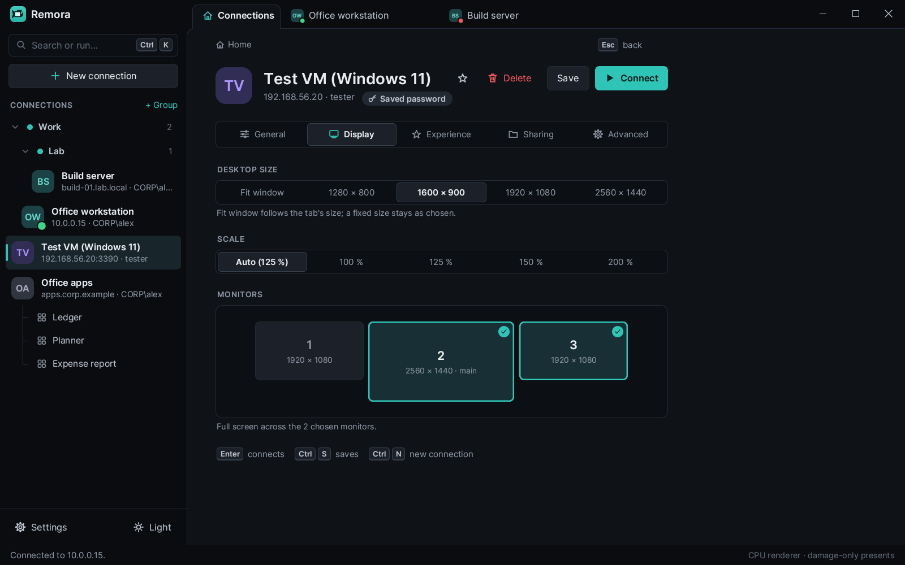
Any of your monitors
Pick monitors on a map of your desk: all of them, or only the ones you want. The session opens full screen with one window on each. Ctrl+Alt+Break brings it back into its tab.
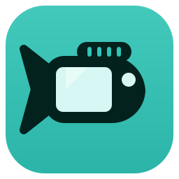
RemoraBeta Free and open source, for Windows
Remora is a Remote Desktop client written from scratch in Rust. Your connections sit in one window, each session in its own tab, and whatever you need is one search away.
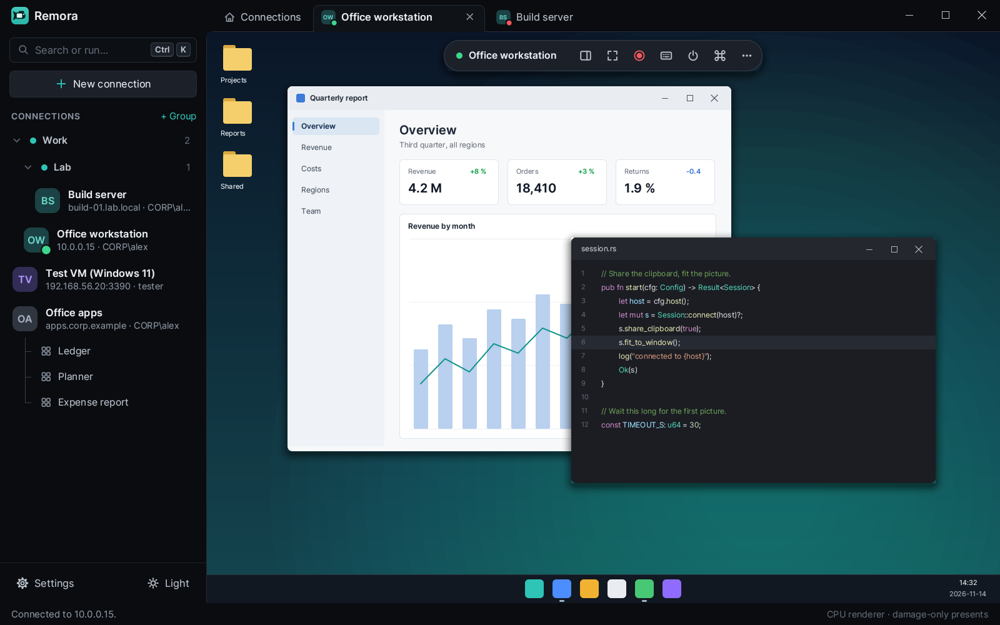
A real screenshot of Remora, rendered with sample connections and a stand-in remote desktop.
Home
Home shows what runs now, with a live thumbnail of each session, then your favourites and the PCs you used last. Open a session with one click, or end it from its card.
Quick connect sits on top. Type a saved name, an address or user@host:port and press Enter. A running session is brought to the front instead of opening twice; a new address opens the editor to ask for the sign-in.
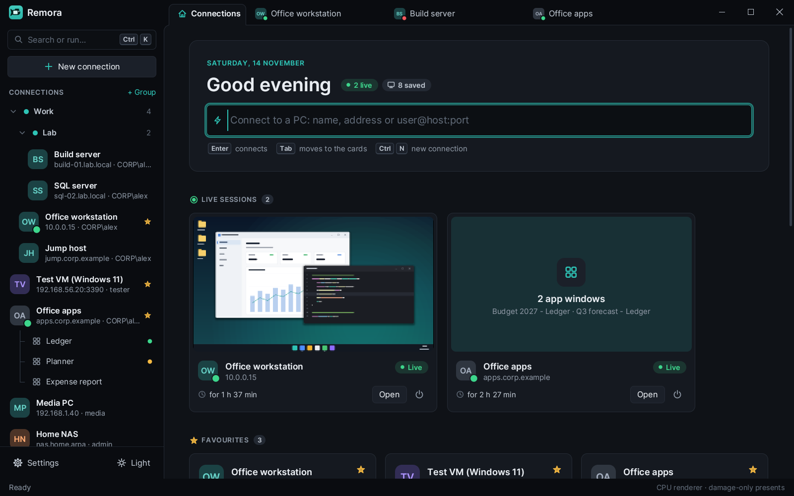
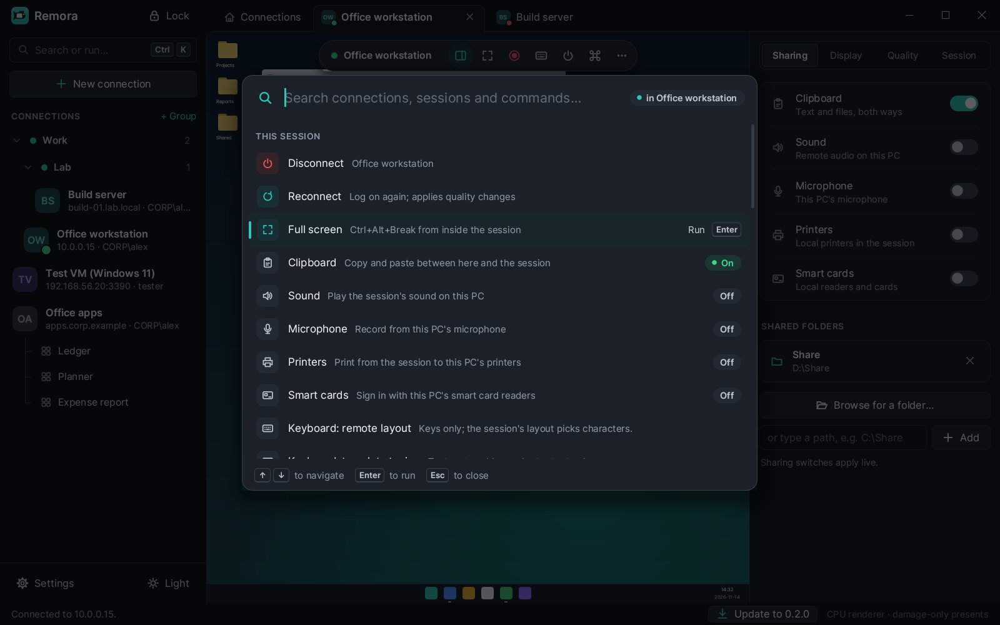
Command palette
One search field finds sessions, saved connections, RemoteApp programs, groups, settings and commands. A few letters of each word are enough; Enter runs the highlighted result.
Inside a session, Ctrl+Alt+K opens it over the remote desktop with that session's own commands first: full screen, recording, keyboard mode and every sharing switch with its current state.
Connecting
Remora shows each step of the connection as it happens. When one fails, it says why in plain words, where it stopped, and what to try, naming your server, port and user.
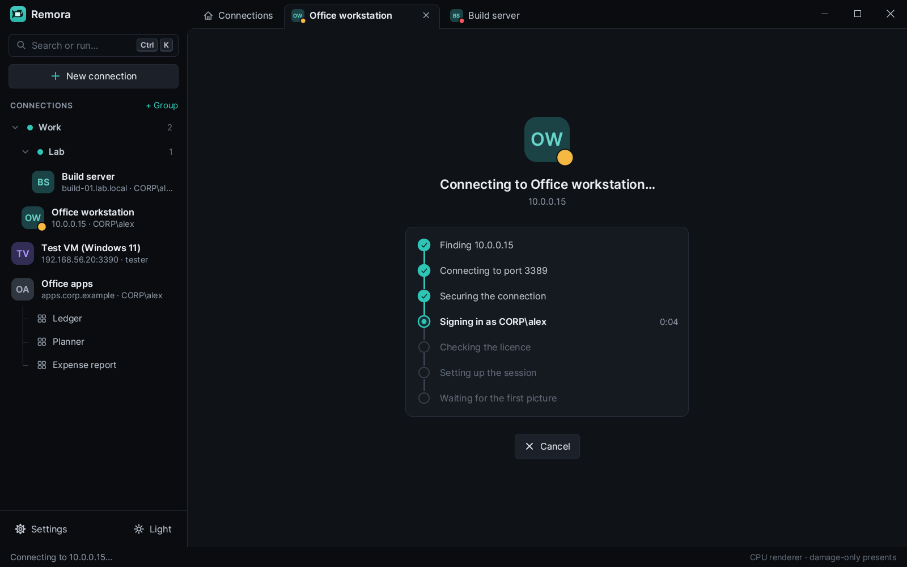
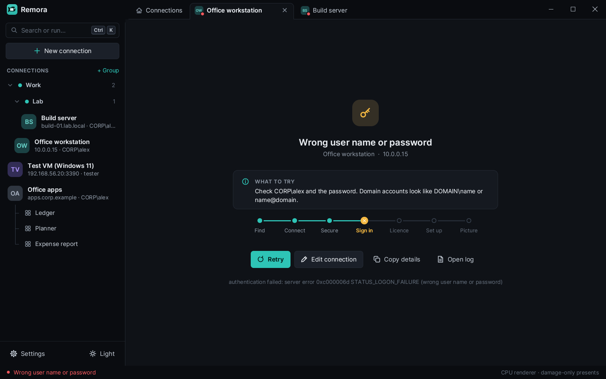
If the network drops in the middle of a session, Remora reconnects on its own, up to five times, with the server's reconnect cookie, so you get the same session back.
Monitors and programs

Pick monitors on a map of your desk: all of them, or only the ones you want. The session opens full screen with one window on each. Ctrl+Alt+Break brings it back into its tab.
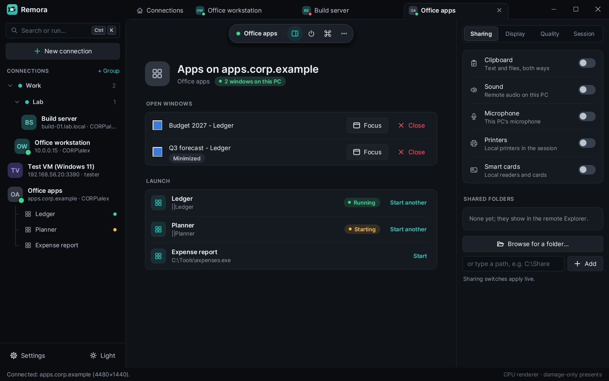
A connection can open single programs instead of the desktop. Each program window sits on your own desktop and taskbar like a local one; the tab lists the open windows and starts more.
Sharing
Everything is off until you turn it on, per connection or for a whole group. The side panel switches each one in a running session, without reconnecting.
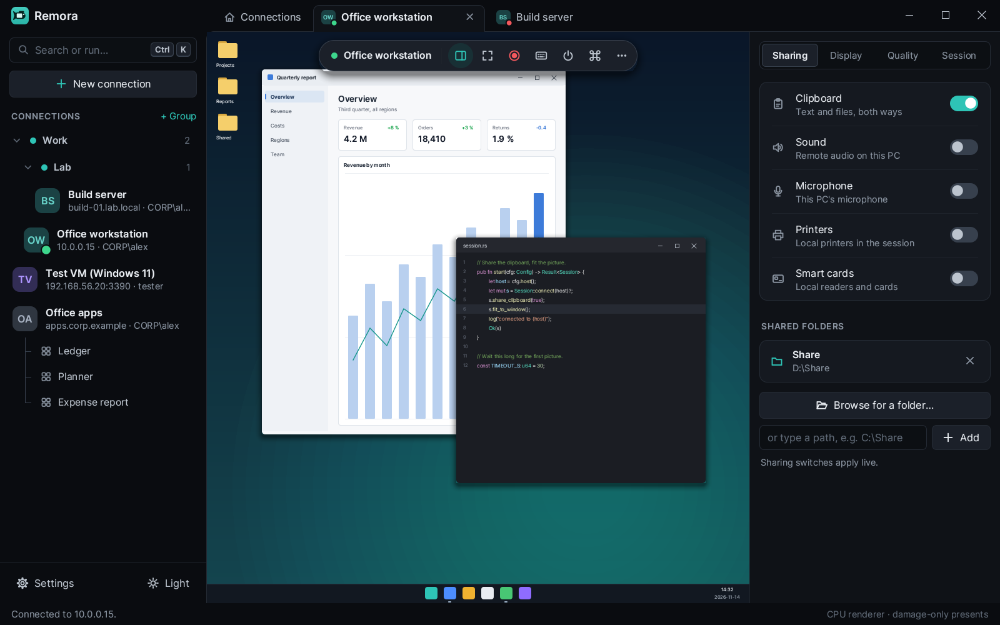
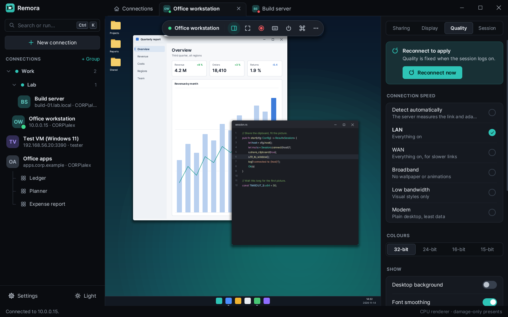
Picture and keyboard
Pick a speed preset, or let the server measure the link. Classic bitmap updates are the default for the lowest latency; the graphics pipeline with H.264, including AVC444 for crisp text, is there to try and still marked experimental.
Remora sends what you type as the characters your keyboard makes, so they come out right even when the remote session uses another layout. Windows keys such as Win+R and Alt+Tab go to the session while it has the keyboard, only in full screen, or never, as you choose.
Connections and groups
The editor has five pages: General, Display, Experience, Sharing and Advanced. On a wide window, a summary next to it says in plain words what Connect will do. Groups carry a colour and can hand their sign-in, display settings and sharing down to every connection in them; Connect all opens the lot.
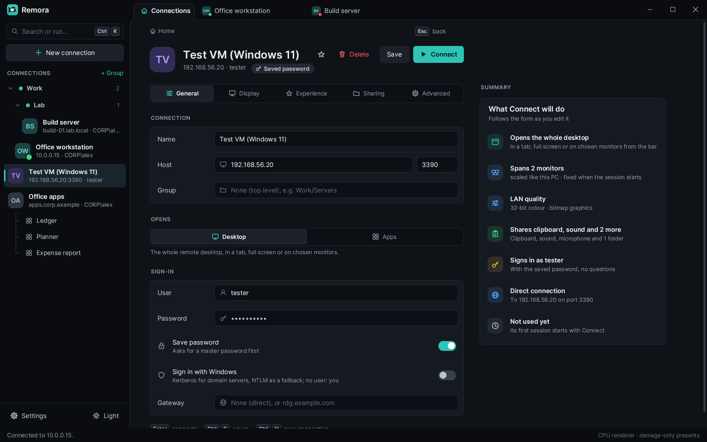
Security and privacy
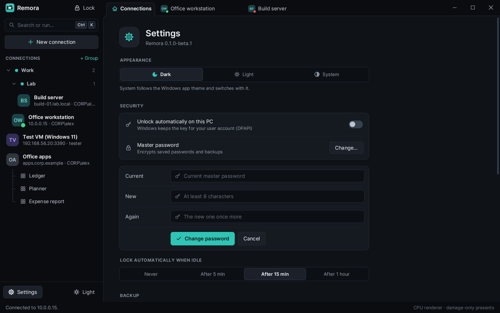
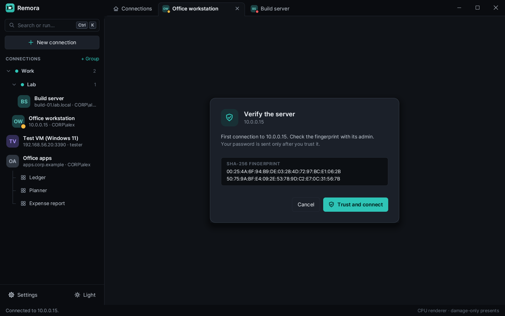
Sign-in happens before the server shows anything: CredSSP with NTLMv2, implemented in Remora, or Kerberos through Windows with single sign-on.
Passwords are saved only after you set a master password: Argon2id and XChaCha20-Poly1305, locked again when idle. Without one, no password is ever written.
The first connection to a server shows its fingerprint, and your password is sent only after you trust it. A changed certificate stops with a warning.
No account and no telemetry. Besides your RDP connections, an installed copy asks GitHub once a day for a new release. The privacy page has the details.
Themes
Dark is the default. Light has the same layout; System follows the Windows app theme as it changes.
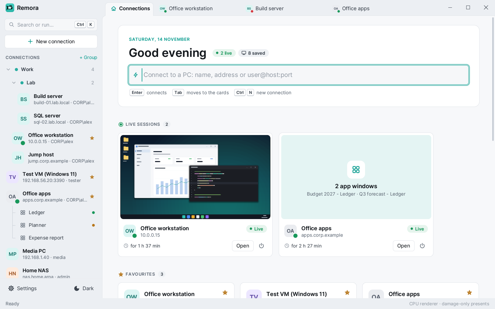
Under the hood
Remora's protocol stack is its own, built from Microsoft's published Open Specifications: the connection sequence, NLA, the bitmap codecs, the graphics pipeline, virtual channels, clipboard and drive redirection. Only TLS and a few cryptographic building blocks come from libraries, and Windows decodes H.264.
The window is drawn on the CPU with no frame loop, and only changed rectangles reach the screen. That keeps it cheap when Remora itself runs inside a remote session.
78 % of a full RDP client
29 of 38 features done 1 partly
That covers the everyday desktop: logon with NLA, the picture, keyboard and mouse, touch and pen, clipboard, drives, printers, smart cards, sound and microphone, RemoteApp and multiple monitors.
Not yet: UDP transport, RD Gateway over RPC, legacy RDP security without TLS, serial ports, USB devices, cameras, plug and play devices, video redirection and shadowing.
Remora is in beta. It connects to Windows with NLA and works for everyday use; the graphics pipeline is experimental, and not every kind of server has been tried yet. Expect rough edges, and please report them. The newest release is , from .
Installs for your user only, without admin rights, with a Start menu entry. It changes neither PATH nor file types, and it keeps itself up to date.
A zip to unpack anywhere and run. It changes nothing on your PC and does not check for updates.
For 64-bit Windows. The setup is not code-signed yet, so Windows may warn on the first run: choose More info, then Run anyway. Every file is listed with its SHA-256 in SHA256SUMS.txt; the install guide shows how to check it. New here? Start with Getting started.